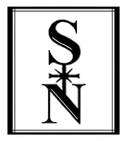

| |

S/N BOOKS
free pdfs
Charles Bernstein
L=A=N=G=U=A=G=E ¡CONTRAATACA! Poéticas selectas (1975-2011)
ed./tr. Heriberto Yépez, et al.,
intro. Eduardo Espina
(Mexico, Mex: Aldus, 2013)
Charles Olson
Poemas
Spanish tr. by Jorge Santiago Perednik and Ernesto Livon Grosman
intro Perednik
(Buenos Aires: Tres Haches, 1997)
Néstor Cabrera, tr.
La política de la forma poética
[The Politics of Poetic Form, Spanish translation]
Esteban Pujals Gesalí, ed. & tr.
La Lengua Radical: Antología de la poesía norteamericana contemporánea
edited by Eduardo Espina and Charles Bernstein
published by Julia Stanka
S/N BOOKS
free pdfs

V.I, N.1 (PDF)
April 2010
Charles Bernstein
Nuestras Américas: Nuevos mundos todavía en formación
Traducción, Ernesto Livon-Grosman
Régis Bonvicino
Blue Tile
Translation, Charles Bernstein
José Kozer
The Neo Baroque: A Converging in Latin American Poetry
Oliverio Girondo
Poems
Introduction and translations, Molly Weigel
El desafío del lenguaje: Entrevista con Marjorie Perloff (En español)/
The Challenge of Language: Interview with Marjorie Perloff (In English)
Enrique Mallen
Carlos Germán Belli Poems
Introduction and translations, Rose Shapiro
Baroque and Neobaroque
Roberto Echavarren
Robert Creeley
Poemas
Traducciones, Ernesto Livon-Grosman
Notas de Charles Bernstein
Harryette Mullen Nachas negras
Introducción y traducción, Pedro Serrano
Eduardo Espina I Am My Favorite Poet
Translation, Travis Sorenson
Tom Raworth Poemas
Introducción y traducciones, Gabriela Jauregui
What Are The United States And Why Are There So Many of Them? (Work in Progress)
Heriberto Yépez
Tan Lin, Indice Suave
Traducción, Julia Stanka
V.I, N.2 (PDF)
October 2010
Notas Para una Poética Oposicionista
Erica Hunt
I’m Not There: Juan Luis Martínez’s La Nueva Novela
Introduction, Mónica de la Torre
Juan Luis Martinez Poems
Translation, Mónica de la Torre
hi-res images
Sobre John Ashbery: “La voz, las voces”
Introducción, Roberto Echavarren
John Ashbery Poemas
Traducción, Roberto Echavarren
From Jorge Santiago Perednik’s The Shock of the Lenders
Introduction & translation, Molly Weigel
“It’s a Great Thing, Poetry”: Interview with José Viñals |
“Es una cosa muy grande, la poesía”: Entrevista con José Viñals
Benito del Pliego & Andrés Fisher
Harryette Mullen Poemas
Traducción, Pedro Serrano
Carmen Berenguer Poems
Translation, Mariela Griffor
De Mi Vida de Lyn Hejinian
Introducción & traducción, Tatiana Lipkes
From Oliverio Girondo’s In the Moremorrow
Translation, Molly Weigel
Tom Raworth Poemas
Traducción, Gabriela Jauregui
V.I, N.3 (PDF)
May 2011
los 90
Juliana Spahr
Alfonso D’Aquino, poems
Translation, Forrest Gander
Una sintaxis simultánea: Introducción a Ted Berrigan |
A Simultaneous Syntax: Introduction to Ted Berrigan
(PDF)
Eduardo Espina
Ted Berrigan, poemas
David Berrigan
Interview with Charles Bernstein |
Entrevista con Charles Bernstein
Enrique Mallen
Michael Palmer, poemas
Traducción, José María Antolín
Silvia Guerra, poemas
Translation, G.J. Racz
from Diarios Clarividentes |
Hannah Weiner
Traducción, Rodrigo Flores
Hugo Gola, a poem
Translation, William Rowe
Técnicos de lo sagrado |
Jerome Rothenberg
Traducción, Heriberto Yépez
Sobre la traducción total: Un experimento en la presentación de poesía indígena |
Jerome Rothenberg
Traducción, Heriberto Yépez
José Viñals, poems
Andrés Fisher & Benito del Pliego
V.I, N.4 (PDF
August 2012
Mario Arteca, tr. G.J. Racz
Lila Zemborain, tr. Gabriel Amor
Fransisco Madariaga, tr. Molly Weigel
Esteban Peicovich, tr. G.J. Racz
Barbara Guest, tr. Arcadio Leos
Poetics / Poeticas
Meanwhile | Daniel Freidemberg
de Ojos del testimonio | Jerome Rothenberg, tr. Heriberto Yépez
Una semana de blogs para la Fundación de Poesía | Kenneth Goldsmith, tr. Néstor Cabrera Quesada
Escritura y experiencia | Nick Piombino, tr. Néstor Cabrera Quesada
Francisco Madariaga, mi padre, el poeta del trino blanco y el oro del amor | Lucio L. Madariaga
Interview w Francisco Madariaga | Silvia Guerra
LINEbreak: Barbara Guest en 1995 | Charles Bernstein, tr. Arcadio Leos